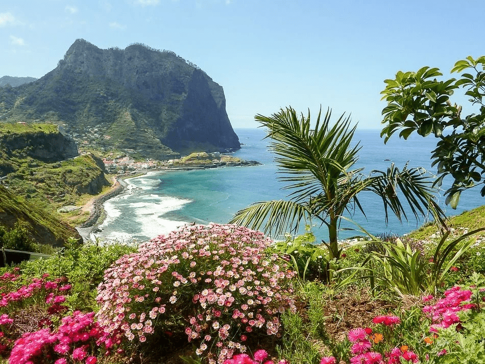

Остров Мадейра
Расскажу Вам немного об острове Мадейра
Мадейра (Madeira) – архипелаг, лежащий в 520 км от побережья Африки и в 1000 км от Португалии, автономным регионом которой он является.
Что в нем особенного?

Картинка с абсолютной ссылкой
Картинка с относительной ссылкой
Так что в ней особенного ?
- Мягкий климат (Круглый год температура в пределах от 16 °C до 25 °C)
- Прекрасные виды и живописные ландшафты
- Невысокая плотность населения
- Высокий уровень жизни
Какие есть еще плюсы?
- Возможность получить ВНЖ Португалии (шансы выше чем на материке)
- Невысокая стоимость на недвижимость